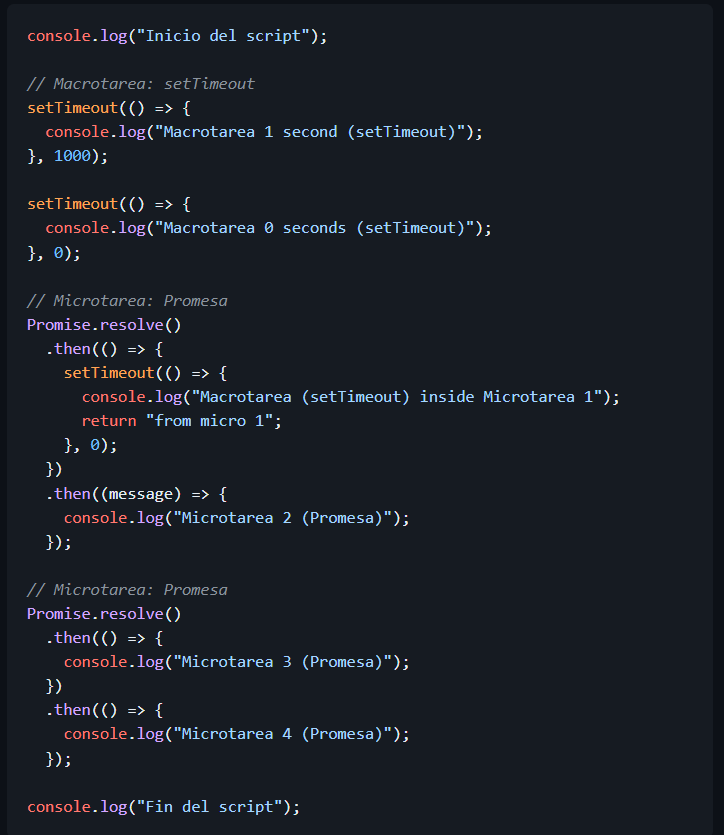
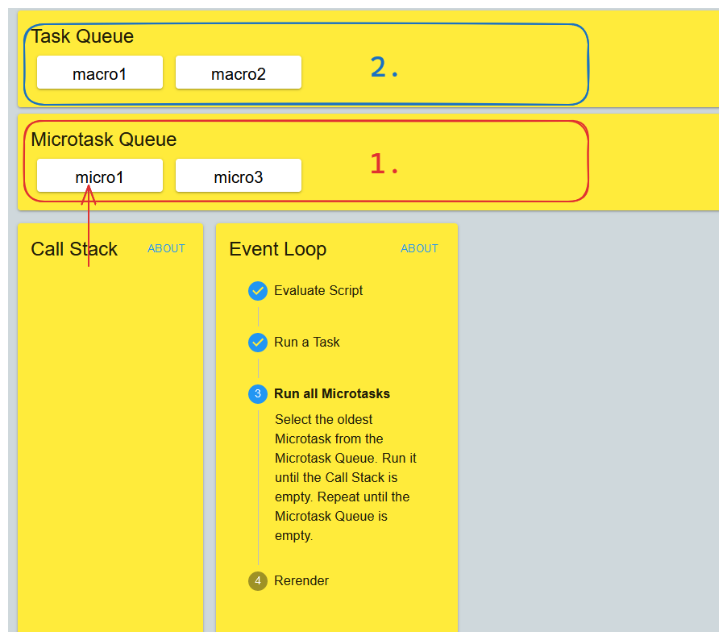
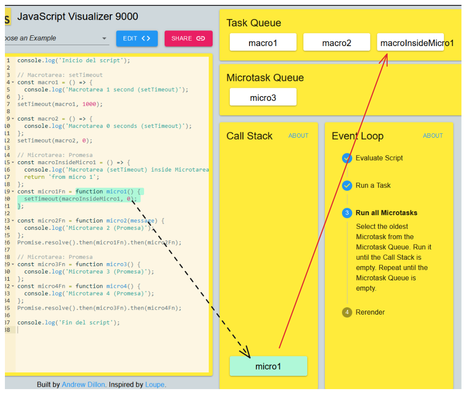
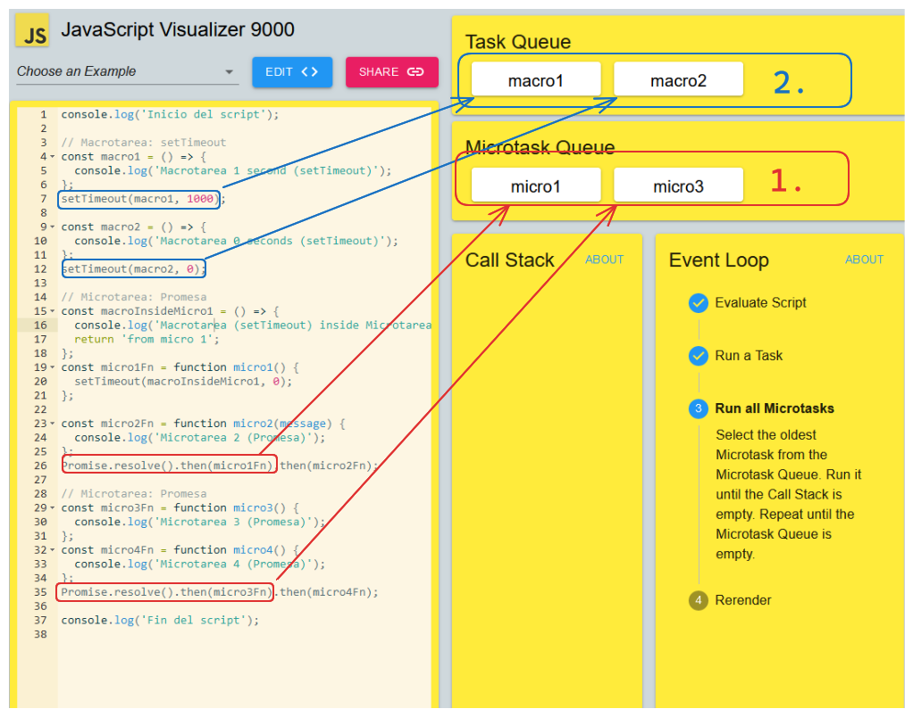

Visualización del Event Loop
¿Qué tareas se consideran macrotareas y cuáles son microtareas?
-
Los callbacks de los
setTimeout()son macrotareas -
Los callbacks de los
.then()son microtareas
¿Cómo se relacionan las macrotareas y microtareas con el event loop?
El Event Loop prioriza las microtareas sobre macrotareas. Es decir, se va a encargar de apilar las microtareas que haya antes de si quiera revisar si hay macrotareas.
¿Qué sucede cuando una microtarea genera una nueva macrotarea dentro de ella?
La macrotarea generada es procesada por la Web API y al terminar es encolada detrás de las macrotareas que haya pendientes
¿Cómo se manejan las promesas y los setTimeout en relación con el event loop?

El Event Loop maneja la promesas primero al ser
microtareas y los setTimeouts al ser
macrotareas cuando ya no hayan más microtareas y se haya
renderizado (si fuere necesario).